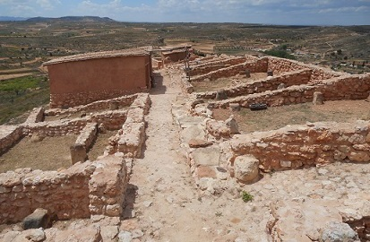
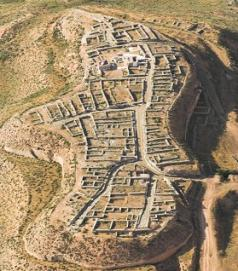

|
TERUEL ROMANO Poblado desde la antigüedad, con la llegada en el año 218 a.e.c. de Cneo Cornelio Escipión, los romanos protagonizaron los primeros enfrentamientos con la población indígena del Valle del Ebro y sus áreas colindantes, los iberos y los celtiberos. De esta época destacan los yacimientos de: - El Palomar, situado a 1 km de la localidad de Oliete, se accede a través de un sendero señalizado que parte de esta localidad. Data del siglo III a.e.c. al I a.e.c. Fue destruido durante las Guerras Sertorianas. Tras su destrucción fue abandonado. Posteriormente fue reutilizado como necrópolis visigoda. - Cabezo de la Guardia, data de los siglos V-IV a.e.c. al I. Se localiza a unos 6 km al norte de la localidad de Alcorisa. - El poblado de San Antonio se localiza en Calaceite. Data de los siglos V-IV al II a.e.c. - Torre Cremada data del siglo I a.e.c. Se localiza en las proximidades del Tossal Montañés que data de los siglos siglos VII al IV a.e.c. , ambos en Valdetormo. -En Andorra destaca el poblado íbero y la necrópolis del Cabo. El poblado original se localizaba a unos 2km al NO. Se desmanteló a causa de la mina de carbón y se trasladó a su emplazamiento actual. Se ha reconstruido en planta exacta y a escala del antiguo poblado.
 - El poblado de Taratrato data del siglo IV a.e.c. El poblado fue destruido violentamente por un incendio. Se localiza en Alcañiz. - La necrópolis del Cascarujo se localiza en Alcañiz. Data de los siglos VII al V a.e.c. - El Cabezo de Alcalá se localiza en la localidad de Azaila. Data de los siglos VIII al I a.e.c. Fue destruido durante las Guerras Sertorianas.
 - Contrebia Belaisca se localiza en Botorrita. Data de los siglos III a.e.c. al siglo III.
De época romana destacan: - Los puentes de Luco de Jiloca y de Calamocha. - El acueducto de Albarracín-Cella. - En Cella en enero de 2021, en el castro celtibero del Cerrillo, hallan en un horno donde se fabricó posiblemente la mejor cerámica celtíbera. Los investigadores del IMBEAC descubren la estructura "en unas condiciones excepcionales": no hay precedentes en la Península en cuanto a su estado de conservación. El oppidum fue habitado del siglo VI al I a.e.c. - La ciudad romana de La Caridad en Caminreal. - La villa romana de la Loma del Regadío en Urrea de Gaén. - En La Puebla de Híjar, en agosto de 2015, se saca a la luz un mosaico polícromo de buena factura con decoración geométrica que pertenece a una villa romana del siglo II o III ubicada en la partida de Campo Palacio. - La calzada romana de Torre del Compte, parte del antiguo camino que llegaba a la localidad desde Cretas, y que tras ascender al pueblo discurría en paralelo al río.
|